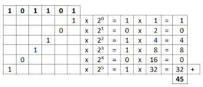
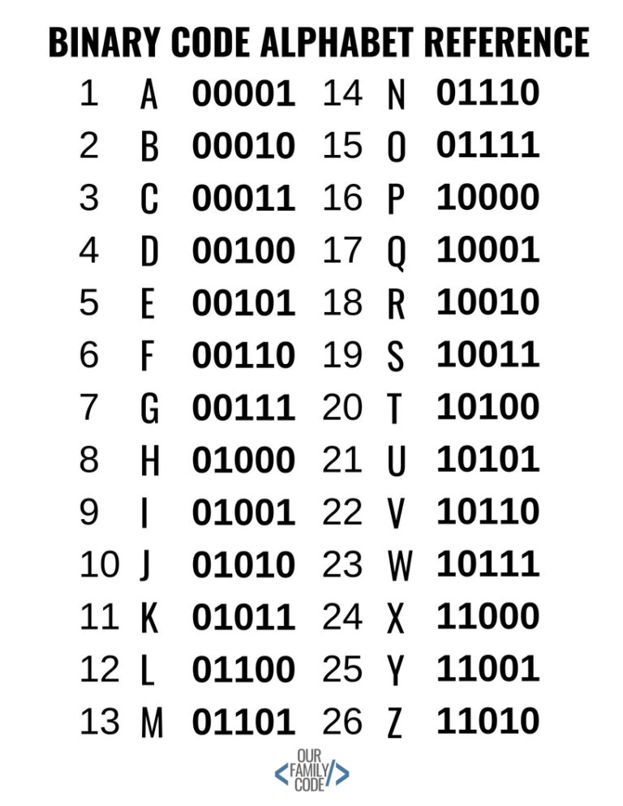
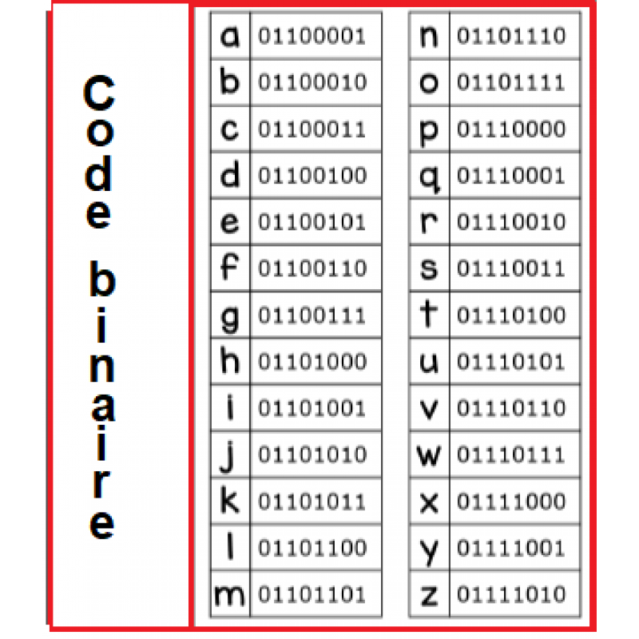

Het binaire stelsel
Getallen worden aangegeven in stelsels er zijn er 2: het decimalen stelsel en het binaire -. In het alledaagse leven gebruiken wij het decimalen stelsel daar zitten 10 elementen in: 0,1,2,3,4,5,6,7,8 en 9. Als je dan bij 10 komt is 10 een 1+0. Het binaire stelsel heeft niet 10 elementen maar 2: 0 en 1. Je gebruikt hierbij 2 tot de macht x. Hier zijn wat voorbeelden: 10=2 omdat 2 tot de macht 1 is 2 Als je zo doorgaat kan je elk cijfer maken die je wilt zoals 10001=17 want 2 tot de macht 4 plus 2 tot de macht 0 is 17. Het hele systeem in een computer draait op dit stelsel. Alles wordt dus omgezet in nullen en enen ik ga uitleggen hoe dat bij woorden en geluid gebeurd hoe dat met kleuren wordt gedaan leg ik uit bij kleurmodellen.

Woorden in het binaire stelsel
Nu weet je wat het binaire stelsel is maar waar wordt het voor gebruikt? Een computer gerbuikt om allemaal dingen te regristreren zoals kleur, geluid en woorden. Hoe kleuren worden gemaakt leg ik uit bij het kopje kleurmodellen. Woorden worden per letter geregristreerd hier staan 2 plaatjes van het alfabet in het binaire stelsel:
 
Zo worden woorden dus opgeslagen in een computer.
Geluid in het binaire stelsel
Om te weten hoe geluid wordt geregristreerd in het binaire stelsel moet je eerst weten wat geluid is. Geluid zijn trillingen in de lucht die we kunnen opnemen met een microfoon. Nadat het is opgeslagen kan een computer het omzetten in samples. Hierbij wordt op elke seconde een bepaalde waarde gemeettte. Dit kun je aangeven met een grafiek:

Wat je ziet is dat het geluid wat wordt opgenomen heeft allemaal verschillende waardes. Een computer kan niet al die waardes opslaan dus wat het doet is op bepaalde plekken een waarde opmeten. Die waardes worden omgezet naar een 1 of 0. Dat proces noemen we sampelen. Zodra het geluid is omgezet wordt het uitgevoerd dan komt het weer in een soortvan het zelfde grafiek te staan. Het enige wat er veranderd is is dat het minder vloeiend loopt. Je hoort het verschil alleen vaak niet tenzij het te haperend is dan is er een te lang stuk zonder waarde. Dit is ook hoe bellen werkt je telefoon vangt het signaal op en zet het om. Dan begint het hele proces.